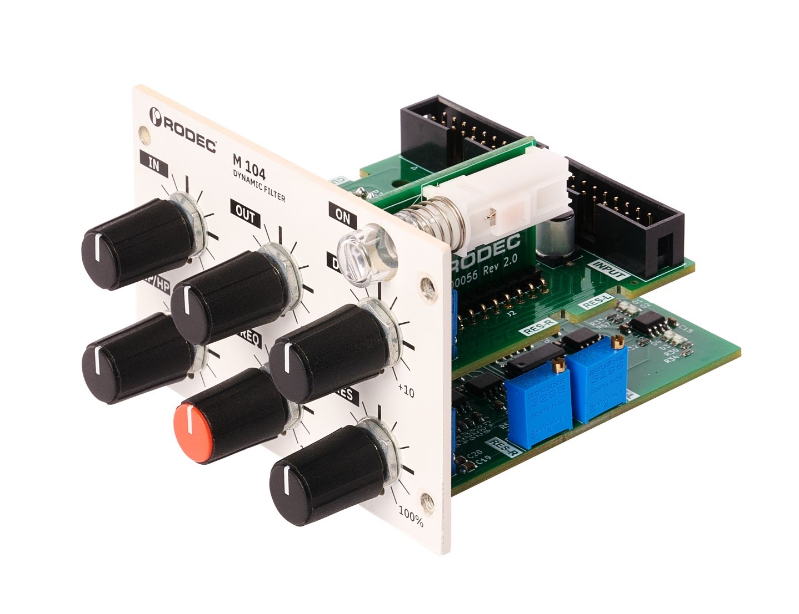

M-104 Stereo Filter

The M-104 Stereo Filter is a versatile and musical module inspired by classic synth-style filters, designed for both creative sound shaping and precision control. Its dynamic response and innovative filter design make it an essential tool for producers and sound designers.
Key Features
- 6 Control Knobs:
- Drive:
- Adds +20 dB of input gain, allowing you to saturate the signal for warm, analog-style overdrive.
- Out:
- Make-up gain control to fine-tune output levels, ensuring optimal levels without overloading downstream ADCs or other equipment.
- Dyn (Dynamic Envelope):
- Controls the frequency envelope dynamically, adjusting the filter frequency in response to the input volume.
- LP/HP:
- A unique feature that allows seamless movement between low-pass and high-pass filtering, offering exceptional flexibility for tonal shaping.
- Frequency:
- Sets the cutoff frequency of the filter, with seamless Low-Pass (LP) and High-Pass (HP) transitions for smooth, creative filtering.
- Resonance:
- Controls the filter resonance, capable of self-oscillation for powerful, harmonic effects and vintage synth tones.
- Drive:
- True Bypass:
- A dedicated ON button provides true bypass functionality, completely removing the module from the signal path when unlit.
- CV Control:
- The filter responds to CV (Control Voltage) signals, enabling external modulation for advanced filter sweeps and rhythmic dynamics. This is automatically wired in Rodec housings. See Rodec 100 series for pin layout.
Applications
- Sound Design:
- Create dynamic and evolving textures using the filter’s dynamic envelope and smooth LP/HP transitions.
- Mix Enhancement:
- Sculpt frequency ranges with precision to add warmth, clarity, or movement to your tracks.
- Performance and Modulation:
- Use the CV input for synchronized filter sweeps or rhythmic effects in live or studio settings.
- Analog Saturation:
- Push the Drive knob to add rich harmonic distortion to your audio, reminiscent of vintage analog gear.
Summary
The M-104 Stereo Filter is a powerful tone-shaping tool, blending classic analog warmth with modern innovation. Its dynamic envelope, smooth LP/HP transitions, and CV integration make it a perfect choice for anyone looking to add depth, character, and movement to their sound. Whether you’re crafting textures for electronic music or fine-tuning a mix, the M-104 offers unmatched flexibility and creativity.